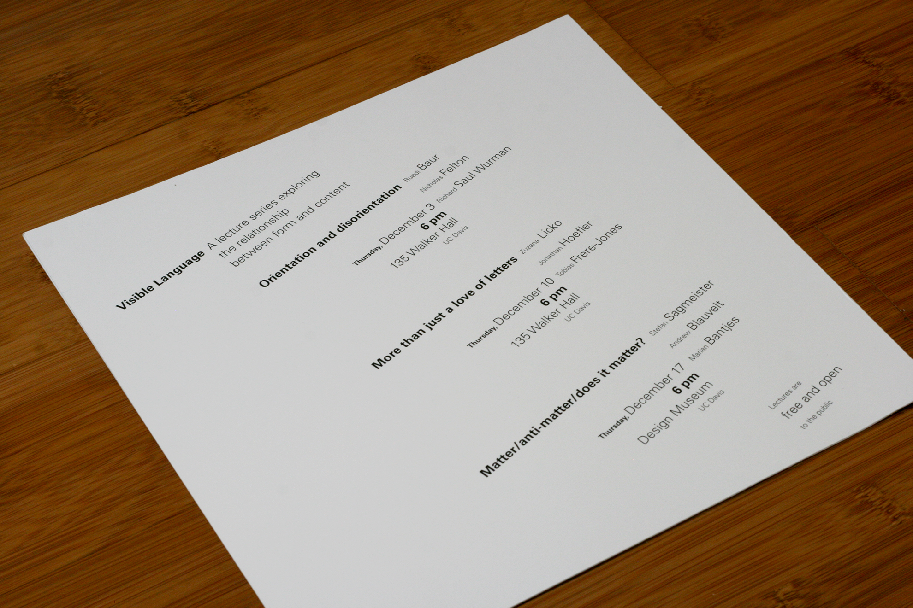
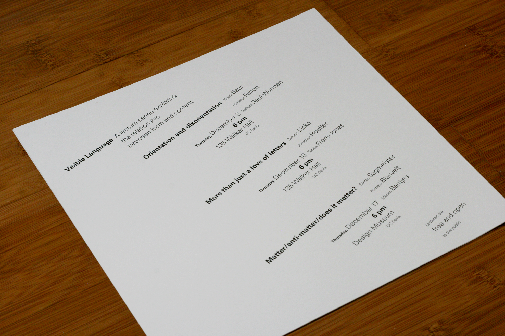

I completed this project on hierarchy while taking the course DES115: Letterforms & Typography at UC Davis. We were given the copy for a series of lectures and then tasked with creating posters on a 10x10 canvas to advertise to the public. In the first poster, we were only allowed to use one size and one weight of the typeface Univers. In the second poster, we were permitted to use two weights. As we progressed, we were given less restraints and also the requirement of adding rules, until on the last one, we could do whatever we wanted. I found this assignment challenging both with and without multiple constraints. It was difficult finding a balance between too simple and too crazy, while also maintaining readability and hierarchy. My final products demonstrate this balance by grouping blocks of text together, while arranging them at different angles, and also emphasizing the important parts of the poster with various weights and sizes. You can see more of the process behind this project here!


 
